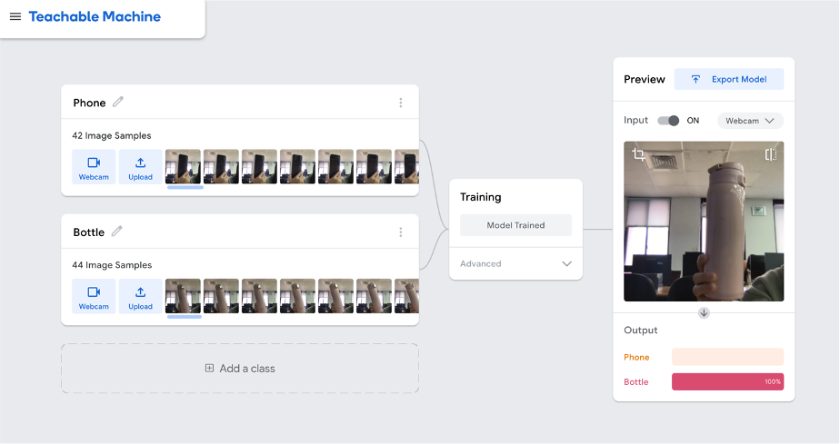

📘 作品一：Teachable Machine 圖像分類系統

📘 內容說明
- 分類項目（Classes）： 模型區分兩個類別：「Phone（手機）」與「Bottle（水瓶）」，分別包含 42 與 44 張樣本圖片，透過即時拍攝或上傳方式取得。
- 模型訓練（Training）： 中央顯示「Model Trained」字樣代表訓練完成，只需按按鈕即可完成，不需寫程式。
- 即時預測（Preview + Output）： 右側視窗顯示模型即時辨識結果，該圖中辨識出「水瓶」機率為 100%。
✍️ 學習應用心得
- 操作簡易，降低學習門檻： 平台無需寫程式，點擊按鈕即可訓練，非常適合初學者與教學應用。
- 資料質與量同等重要： 儘管每類僅約 40 張圖片，因拍攝角度與辨識特徵清晰，仍能高準確辨識。這讓我理解「一致性與多樣性」的重要性。
- 即時性與互動性強： 模型預測幾乎無延遲，讓互動式應用成為可能。
- 適合製作教學案例與原型設計： 可應用於學習用具分類、臉部表情辨識或姿勢偵測等，適合作為原型開發工具。